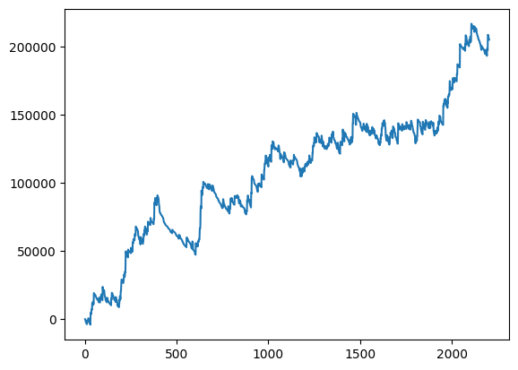

株式会社AI Solutions Labでは競馬AIの開発請負も行なっております．
今回は弊社で開発している競馬予想AIであるLaplaceの開発プロセスについてご紹介します．
1. はじめに
「儲かる競馬AI作ることは可能か？」は誰しも一度は考えたことがある疑問だと思います．私の答えは「可能」です．
競馬は馬の能力，血統，天気等の様々な要素が複合して結果に影響します．これらのデータを分析するという点でAIや統計は非常に有効な手段になります．
私は2021年からAIで競馬の分析をしており，X(Twitter)で予想を投稿しておりました． Laplaceは現在も進化を続けており，2023年は回収率105%という結果を残しました．
2. データ収集
弊社ではカスタマーのデータベースを使用して最適な競馬予想AIを開発していますが， JRDBを使用しても回収率100%を超える結果を得ることができます．
その他の選択肢としてはスクレイピングや，JRA-VANといったサービスを使用することが考えられます．
使用するデータには以下のようなデータが必要です．
- 馬: 血統，体重，年齢，性別など．
- 騎手: 騎手の過去の成績など．
- コース，天気: 距離，天気，馬場など．
- レース結果: 着順，タイム，オッズなど．
JRDBでは得られたデータはtextファイルなため，パースする必要があります．
https://github.com/absoishi/jrdb
こちらのリポジトリを使用することで簡単にデータをパースすることができます．
3. 特徴量エンジニアリング
得られたデータは大抵そのままでは性能は出せません．
特徴量エンジニアリングは，データを機械学習アルゴリズムが効果的に学習できる形式に変換するプロセスです． このステップでは，データから有用な特徴を抽出し，変換することで，モデルの学習効率と予測精度を大幅に向上させることができます． 情報量の多さは性能に直結するため，独自の特徴量を作ることが非常に重要です．
特徴量エンジニアリングの例としては以下のようなものがあります．
- タイムが1:55.3(分:秒)のようになっているところを115.3(秒)に変換．
- 騎手や血統などのカテゴリカルデータに対してのターゲットエンコーディング．
- 過去の馬の成績からの平均値や最大値などの統計量の追加．
- 特徴の分布が正規分布に近くなるように変換．
特徴量エンジニアリングについては 事例で学ぶ特徴量エンジニアリング が参考になります．
特徴量はレース前に得ることができるデータのみで作る必要があります． タイムや確定オッズなどのレース前に得られないデータを使用してしまうと，「リーク」となってしまい，バックテストでは一見高性能のモデルでも 実際に運用を始めると性能が出ない結果となります．
4. 目的設定
儲かる競馬AIを作るためには目的設定は最も重要な項目だと考えています． どのような指標を最適化するかによって，モデルの構造や特徴量エンジニアリングの方針すらも変わってきます．
目的設定の例としては以下のようなものがあります．
- 1着を1，それ以外を0として1着確率を目的変数とする．
- 3着以内を1，それ以外を0として3着内確率を目的変数とする．
- 馬ごとの回収率を目的変数とする．
より正確な予測を行うためにもこの目的設定は重要になってきます． 例えば，オッズを予測させるときは逆数に戻してから支持率として予測させることで， モデルによってはより正確な予測が可能になることがあります．
ここで重要なのが「当てる」のと「儲ける」のは違うという点です． 例えば，1着確率を目的変数とするモデルを作成したとして，1着確率が高い馬を購入したとしても， その馬のオッズが低い場合は儲けにはつながりません．目的変数をうまく設定することで，「儲ける」ためのモデルを作成することができます．
5. 学習
学習の際にデータセットはtrain, validation, testの3つに分割する必要があります． 詳しくはこの記事等を参考にしてください．
競馬のデータは年間3千レース程度と少ないため，最適なデータセット分割は難しいです．コースの改修があるため，過去のデータはあまり役に立たないこともあります．
今回扱うデータはテーブルデータと言われるカテゴリです．テーブルデータはLightGBMなどの勾配ブースティングアルゴリズム やニューラルネットワークのモデルを使用することが一般的です．
6. 結果
以下がLaplaceの2024年の現在までの単勝の結果です．
的中率11%，回収率119%という結果となりました．
7. まとめ
今回は中央競馬における予想AIの開発について紹介しました．
AI Solutions Labでは中央競馬だけではなく地方競馬AIについても開発しています．
ご興味のある方はお気軽にお問い合わせくだい．
8. 参考文献
最後に競馬AIを作る際に参考にしたサイトや文献を紹介します．